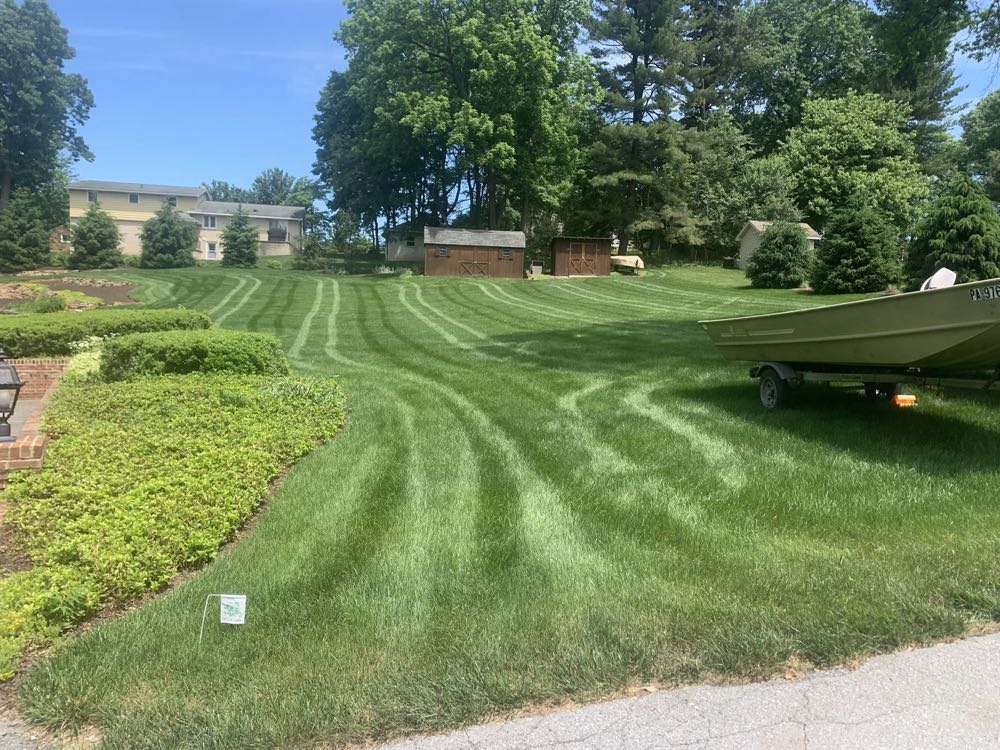
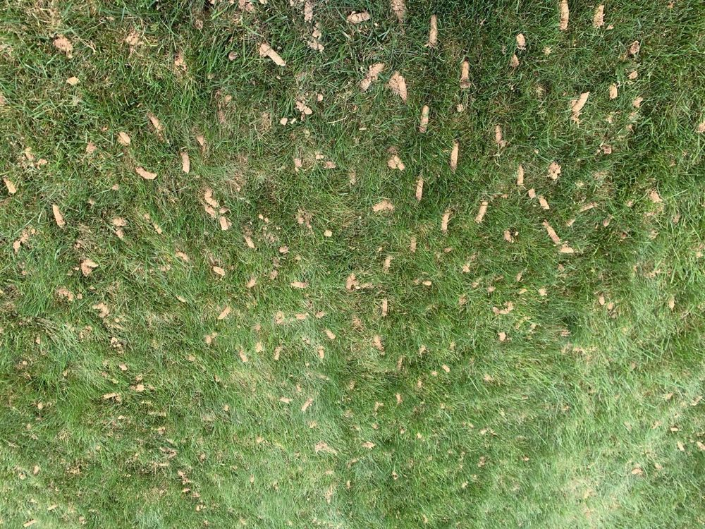

Fertilization, weed control, aeration, overseeding, and fully organic programs designed for Camp Hill borough lots — mature trees, deep shade challenges, and the soil profile of homes built between 1920 and 1965.
Free Estimate — Call or Text 717-379-3248Camp Hill isn't a new-construction problem. Most lots in the borough were carved out in the 1920s through the 1960s, the soil has been mowed and amended for nearly a century, and the canopy of oaks and maples is deep and mature. That gives you three predictable lawn issues:
The newer subdivisions in Hampden Township and East Pennsboro have different problems — we treat them differently. Same company, different program.


Slow-release granular feeding scheduled for early spring, late spring, summer, early fall, and late fall. Rates adjusted for shaded lots vs full-sun. Soil pH testing included on request — older borough lawns often run acidic.
Single split application timed to forsythia bloom and soil temperature, not the calendar. The tree-strip lawns along Market and Walnut Streets need this hit annually or they get crabgrass-dominant by July.
Spot treatment for dandelion, plantain, ground ivy, clover, and creeping Charlie. We don't blanket-spray a healthy lawn — that's how you damage groundcover and pollinator plants you want to keep.
Scheduled only during the first weeks of September — the optimal Central PA window. Overseeded with a turf-type tall fescue blend selected for shade tolerance. The single highest-ROI thing you can do for a tired Camp Hill lawn. Books up by Labor Day.
One systemic preventive treatment in May or June, before the eggs hatch. Stops Japanese beetle and chafer larvae before they kill turf root systems. Targeted, not broadcast — protects pollinators that visit borough flower beds.
For families who want zero synthetic inputs — organic granular fertilizer (poultry-litter base), corn gluten pre-emergent, mechanical/cultural weed management. Slower results but real, and we'll set realistic expectations going in.
The classic borough streets — Walnut Street, Market Street, Chestnut Street, 22nd, 23rd, 24th. The Walden and Tudor Hill neighborhoods. Properties along the Conodoguinet at the north end and the Yellow Breeches at the south. Homes near Willow Park and Siebert Park. Camp Hill Borough proper (17011) and the adjacent Hampden Township and East Pennsboro Township properties.
Locally owned. Licensed PA pesticide applicator. No contracts. Organic and conventional programs. Serving Camp Hill, Lemoyne, Wormleysburg, New Cumberland, Hampden Township, and East Pennsboro.
Call or Text 717-379-3248